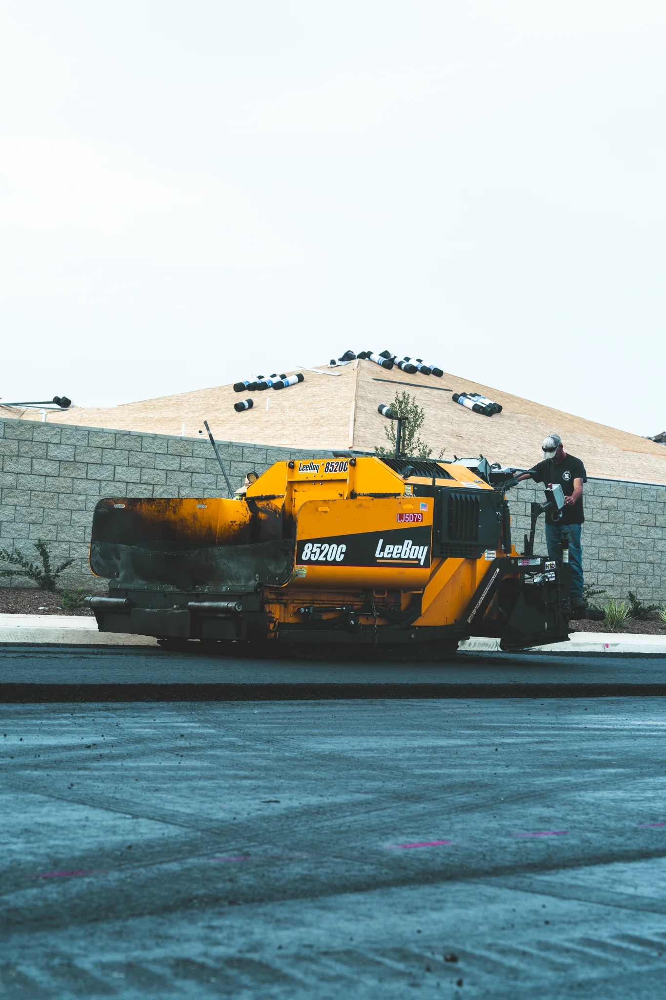
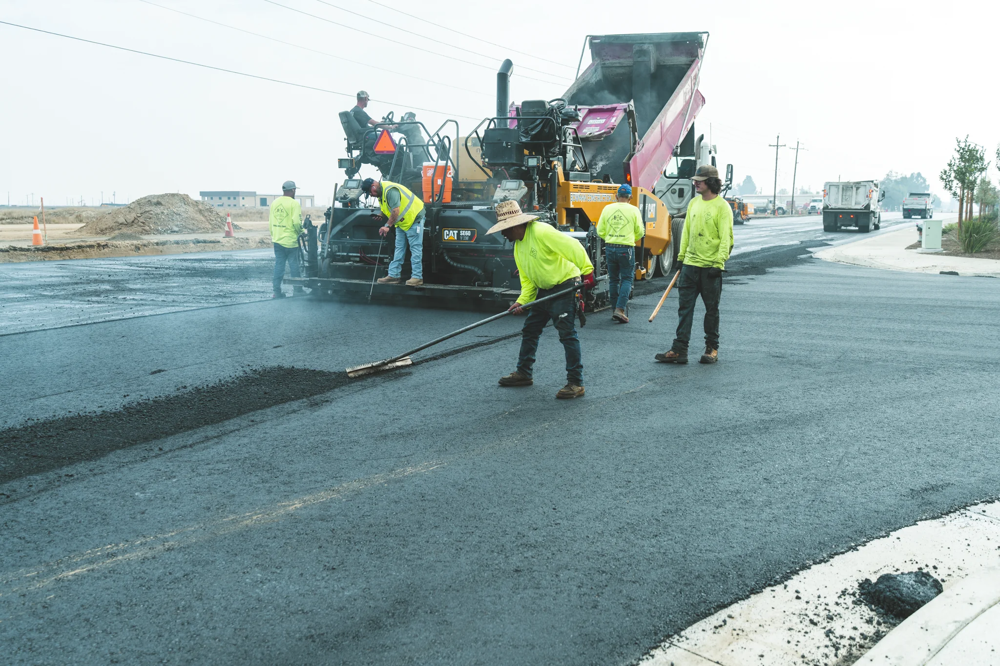

Grading
Site Grading And Base Preparation. A Solid Foundation For The Work Ahead.

BowmanConstruction LLC Call (661) 361-7840Grading, Paving, Concrete, And Care For The Surface. One Crew To Talk Through The Work Your Property Needs.
Discuss Your Project
Site Grading And Base Preparation. A Solid Foundation For The Work Ahead.

Asphalt Paving And Concrete Work, Planned Around Your Property And Finished With Care.

Keep Your Pavement Working. Care And Maintenance Suited To The Condition Of Your Surface.

Protect The Surface. Bring Definition Back With Seal Coating And Clear Pavement Markings.
A Good Surface Starts With The Ground Beneath It. Talk To Bowman About Site Grading And Base Preparation For Your Project.
Tell Us About The Site, The Existing Ground, And What You Plan To Build.
Asphalt Paving And Concrete Work, Planned Around Your Property And Finished With Care. We’ll Discuss The Area, How It Will Be Used, And The Work Needed.
An Approximate Size And A Few Site Photos Are A Helpful Starting Point.
Existing Pavement Needs Attention Too. We’ll Talk Through The Condition Of Your Asphalt And The Maintenance Your Surface Needs.
Share What You’re Seeing And Which Areas Need Attention.
Care For Your Existing Asphalt With Seal Coating And Clear Pavement Markings. Tell Us About Your Surface And The Striping Work You Have In Mind.
Let Us Know Whether You Need Seal Coating, Striping, Or Both.